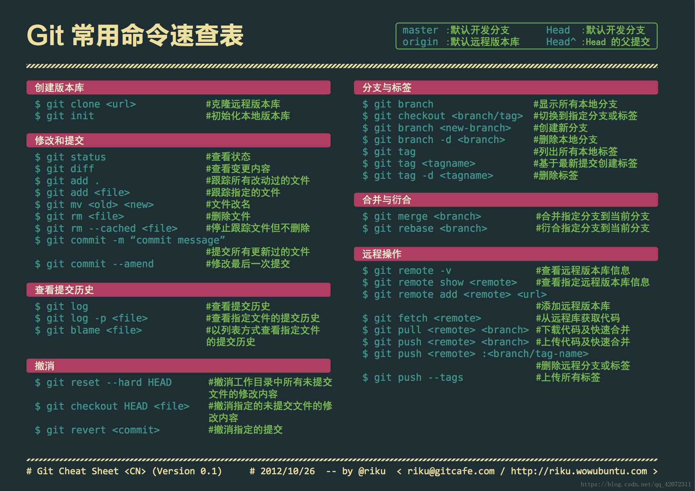

git常用操作
版本管理我基本都是用git，仓库github，原理部分这里不说，但给了一个廖雪峰的链接，那个很详细。这篇主要对付我这种有时候忘指令懒得查的这种人，哈哈哈，比较方便。
链接就是下面这个：
https://www.liaoxuefeng.com/wiki/896043488029600/898732864121440

将本地项目挂到github去
本地文件夹内依次运行:
1 | git init |
一般项目中会有gitignore，就是提交远程时忽视的内容，一定要注意！
tips
1 | git fetch origin 得到所有的远程分支 |